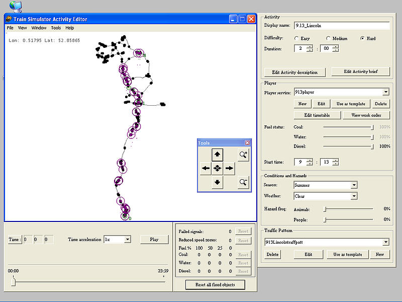

First open the "Train Simulator Editors & Tools" from the shortcut created when MSTS was installed.
Then open the Activity Editor by clicking on the appropriate button.

The first step is to open an activity for the route that you want to work on. It doesn't matter which activity you use, you're not going to change it.
For this tutorial, I am using Tim Court's MidEast UK route version 1.3 and a path created for version 1.2. So the sequence is File | Open | UK1 | Activities | any.act.

The next step is to find all of the paths. Since some aren't player-driveable, the way to do this is through the traffic creation procedure.
On the bottom right under "Traffic Pattern", if there is an entry in the drop down box, click on Edit. If the drop down box says None, click on New. If the latter, just give it a dummy name when asked. You won't be saving the traffic pattern.
In the new box labelled Traffic Pattern that has appeared on the left, click on New.
You now can see the Service Editor. Click on the drop down arrow under Path and scroll down until you find a path that has (broken) beside its name.
Click on Edit. Move the windows around so they look like the next picture – push the Traffic Pattern one off to the left so it's out of the way - put the other two down to the bottom right so that they don't disappear behind the big window if you click on the wrong one.
You are now ready to start fixing the path.
On this one, the broken part, shown with a red line, is fairly obvious. Sometimes they are not so obvious and you have to zoom in on the route and check it from one end to the other to find the red part(s).
To zoom in, put the cursor on the bottom right corner of the route window, hold down the right mouse button and drag it diagonally up and to the left. Zoom out by dragging top left to bottom right.
Move around the route by placing the cursor on the route, hold down the left mouse button and drag. You can also use the arrows on the Tools window or the ones on your keyboard.
That is a place where the path went through a set of points (a node) on the other route version and the node has moved in this version. Put the cursor on the red dot and right click. That brings up the following menu.
Choose Delete broken point and then Yes.
The next task is to put the red part of the path back through the nodes that will work for it. In this example, I went to the bottom end of the red line to find that the path was on the second line from the right (in this case, the up fast line).
Then I moved up the route until I found the node that it needed to go through. Note in the picture above there are four nodes visible and the path needs to go through the top right one since it is on the second line from the right.
Now you have to grab the red line.
Put the point of the cursor on it and the circle should appear. Unfortunately, the picture above doesn't show the cursor, just the circle.
Now hold down the left button and drag the line towards the node. The red line won't actually move but a new black line will appear and follow the cursor.
Sometimes when you try this, the whole picture moves. If that happens, move it back to where it was, let go and try clicking on another point on the red line. It sometimes takes several attempts, especially if there is a lot of trackwork around or the nodes are close together.
Once you've got it, drag the line through the node. Since the two nodes here are close together, it is better to drag the line to the right past the nodes and then approach the nodes from the right. When a circle appears around the node you want the path to go through, let go of the button.
Now go back to the Path Editor window, which will be partially obscured, and click on Leave Path Editor and then answer Yes to saving the path changes.
The Service Editor will then appear and if you have fixed all of the broken points on that path, the (broken) after the name of the path will have disappeared.
If the (broken) is still there, click on Edit again and check that your fix worked and then check for other broken parts.
If that one was successfully fixed, move down the dropdown list of paths until you find the next broken one.
Sometimes I have found that fixing one path will break another. Strange as that may seem, it does happen.
If I find that happening, I make a copy of all of the paths in the Paths folder into a temporary folder. As I fix each one, I copy the newly fixed path into the temporary folder. At the end of the process, I copy all of the paths in the temporary folder back into the Paths folder and then double check to make sure they are all fixed.
If all of the paths are now fixed, click on Cancel in the Service Editor window. Then click on the red X at the top of the main window.
Click on No to the question about saving the activity.
Just a quick word about start and end points. These can be quite tricky to fix.
If trackwork in a station has changed, it often generates messages about incorrect platforms. Often you can fix these problems by dragging the start or end point back onto an appropriate place on the new trackwork. If this fails for an end point, the end point can just be deleted and a new one created. However, if you delete a start point, the whole path disappears and you have to start again.
Comments or suggestions gratefully received on the UKTS forums or to latimers@ihug.co.nz